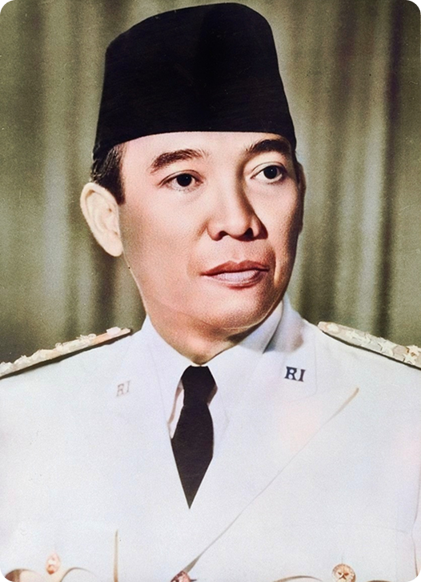

Ir. Soekarno
Ir. Soekarno, lahir dengan nama Koesno Sosrodihardjo pada 6 Juni 1901 di Surabaya, ia menempuh pendidikan di Hogere Burgerschool (HBS) di Surabaya dan Technische Hoogeschool te Bandoeng (sekarang ITB). Pada masa kuliah, ia mulai aktif dalam pergerakan nasional dan mendirikan Partai Nasional Indonesia (PNI) pada 1927. Perjuangannya yang kolosal melawan kolonialisme Belanda menyebabkan ia beberapa kali dipenjara dan diasingkan, termasuk ke Ende, Flores, di mana ia merumuskan gagasan Pancasila.
Proklamator dan Presiden Pertama
Pada masa pendudukan Jepang, Soekarno terlibat dalam Badan Penyelidik Usaha-usaha Persiapan Kemerdekaan Indonesia (BPUPKI) dan menyampaikan pidato tentang Pancasila pada 1 Juni 1945. Puncaknya, pada 17 Agustus 1945, Soekarno bersama Moh. Hatta memproklamasikan kemerdekaan Indonesia. Keesokan harinya, ia diangkat sebagai presiden pertama.
Masa Kepresidenan dan Akhir Kekuasaan
Sebagai presiden, Soekarno menghadapi tantangan berat, termasuk agresi militer Belanda. Ia berhasil mempertahankan kemerdekaan dan memainkan peran penting dalam dunia internasional melalui Konferensi Asia-Afrika pada 1955. Namun, kekuasaannya berangsur melemah setelah peristiwa Gerakan 30 September 1965. Pada 1966, ia menyerahkan kekuasaan kepada Soeharto melalui Surat Perintah Sebelas Maret (Supersemar). Soekarno wafat pada 21 Juni 1970, meninggalkan warisan berupa kemerdekaan dan ideologi Pancasila.
← Kembali